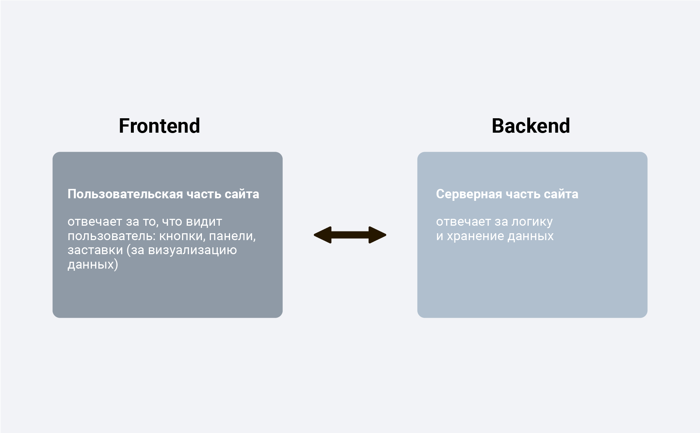

Различие между backend и frontend разработкой
- Frontend разработка: Фокусируется на создании пользовательского интерфейса веб-сайта, который взаимодействует с пользователями. Frontend разработчики работают с HTML, CSS и JavaScript для создания и визуального оформления сайта, а также для обеспечения его функциональности в браузере пользователя.
- Backend разработка: Сосредотачивается на создании серверной части веб-сайта, которая обрабатывает данные и взаимодействует с базой данных. Backend разработчики обычно работают с языками программирования, такими как Python, PHP или Ruby, и базами данных, чтобы создать функциональность, которую пользователи видят на frontend части.

Вернуться на главную страницу